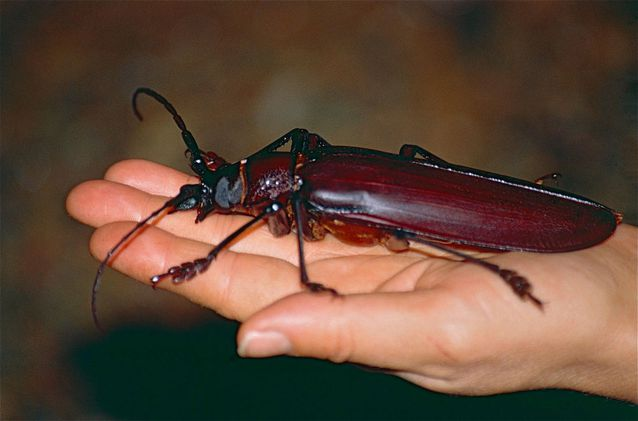

Are they scary?
Titan Beetle
The Amazon rain forest is home to many large beetles, but none of them compares in length to the titan beetle, Titanus giganteus. The titan beetle is the largest known beetle in the Amazon rain forest and one of the largest insect species in the world. They can grow up to 6.6 inches in length, according to the Smithsonian. This gargantuan insect has mandibles that can easily snap a pencil in half, and reportedly they can rip into human flesh, too. Believe it or not, this beetle is actually a draw for adventurous tourists, and many ecotourism agencies in South America advertise pictures of them in their pamphlets. Like many beetles, the titan beetle can emit a loud hissing sound when it is threatened.
Giant stick insect
The longest insects on the planet are stick insects, which have evolved a bizarre shape to hide themselves from predators among branches, twigs and foliage. Stick insects are usually nocturnal, staying motionless hidden under plants during the day and then getting up and moving around at night. The giant walking stick from Southeast Asia is the longest variety, growing to as long as about 2 feet in length. Some species can produce a pungent-smelling defensive spray and some will feign death or even shed a limb to escape the grasp of predators, reports National Geographic. But these bugs are mostly harmless and are often kept as pets.
Titan Beetle
The Amazon rain forest is home to many large beetles, but none of them compares in length to the titan beetle, Titanus giganteus. The titan beetle is the largest known beetle in the Amazon rain forest and one of the largest insect species in the world. They can grow up to 6.6 inches in length, according to the Smithsonian. This gargantuan insect has mandibles that can easily snap a pencil in half, and reportedly they can rip into human flesh, too. Believe it or not, this beetle is actually a draw for adventurous tourists, and many ecotourism agencies in South America advertise pictures of them in their pamphlets. Like many beetles, the titan beetle can emit a loud hissing sound when it is threatened.
Titan Beetle
The Amazon rain forest is home to many large beetles, but none of them compares in length to the titan beetle, Titanus giganteus. The titan beetle is the largest known beetle in the Amazon rain forest and one of the largest insect species in the world. They can grow up to 6.6 inches in length, according to the Smithsonian. This gargantuan insect has mandibles that can easily snap a pencil in half, and reportedly they can rip into human flesh, too. Believe it or not, this beetle is actually a draw for adventurous tourists, and many ecotourism agencies in South America advertise pictures of them in their pamphlets. Like many beetles, the titan beetle can emit a loud hissing sound when it is threatened.